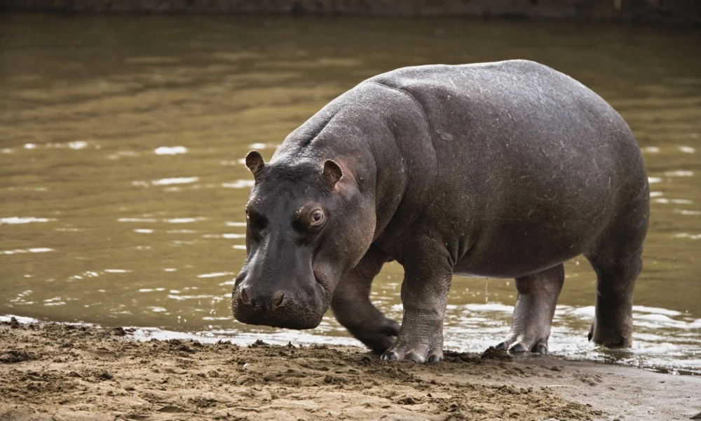

Elefant

The African Savanna (Bush) elephant is the world's largest land animal – with adult males, or bull elephants, standing up to 3m high and weighing up to 6,000kg on average. Males only reach their full size at 35-40 years - that’s well over half their lifespan as wild elephants can live for up to 60-70 years.
Tiger
Tigers have soft toe pads which help them walk silently through their habitat. A tiger will typically travel 6-12 miles during a night’s hunting. During the day, a tiger’s stripes can act as camouflage, allowing it to blend in with its surroundings for stalking and ambushing its prey.
Hippo
Fascinatingly, hippos can identify a friend from foe by smelling their dung – or poop! Hippos use middens, or outdoor areas where they repeatedly go to the bathroom. Hippos can then sniff the area to find out who’s been there, and if they’re considered a friend.